Contraintes virtuelles pour un robot marcheur
- Hypothèses : robot planaire, $n$ DDLs, $n-1$ actionneurs
- Variable de phase: $$ s = \frac{\theta - \theta_i}{\theta_f - \theta_i} \in [0,1] $$
- $n-1$ contraintes virtuelles de la forme $$ y_i(q) = q_i - h_i(s,\alpha) $$
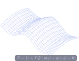
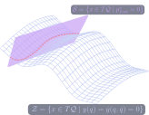
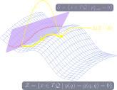
Théorie de la zéro-dynamique hybride
- Contrôleur par linéarisation partielle $y(q) = 0$ rendant $\mathcal{Z}$ invariant
- Condition d'existence: $$ \Delta (\mathcal{Z}\cap \mathcal{S})\subset\mathcal{Z} $$
- Méthode limitée à la stabilisation d'un mouvement périodique.
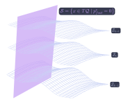
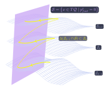
Notre approche :
- Relaxer le besoin de périodicité pour accomoder des mouvements complexes
- Choisir $y_{k+1}$ en ligne qui satisfasse: $$ \Delta (\mathcal{Z}_k\cap \mathcal{S})\subset\mathcal{Z}_{k+1} $$
- Garantir que le robot est capable de compléter un pas : condition de viabilité
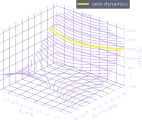
Portrait de phase de la zéro-dynamique
$$ \epsilon (\xi_1, \xi_2) = \frac{1}{2}\xi_2^2 - \int_{\xi_1^-}^{\xi_1} \frac{\kappa_2 (\xi)}{\kappa_1 (\xi)} d\xi $$
- $\epsilon(\xi_1,\xi_2)$ est conservé par la zéro-dynamique.
- Le portrait de phase ressemble à celui d'un pendule inverse
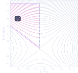
Condition de viabilité
Théorème
Il existe $\alpha<0$ tel que un pas commençant à $z^+ = (\xi_1^+,\xi_2^+)$ est viable si: \[ \alpha (\xi_1^+-\xi_1^*) < \xi_2^+ < \xi_2^{sup} \] où $\xi_2^{sup}$ limite l'énergie de la zéro dynamique et $\xi_1^*$ est la phase au moment où l'énergie potentielle est maximale.
Résultat: marche à vitesse variable
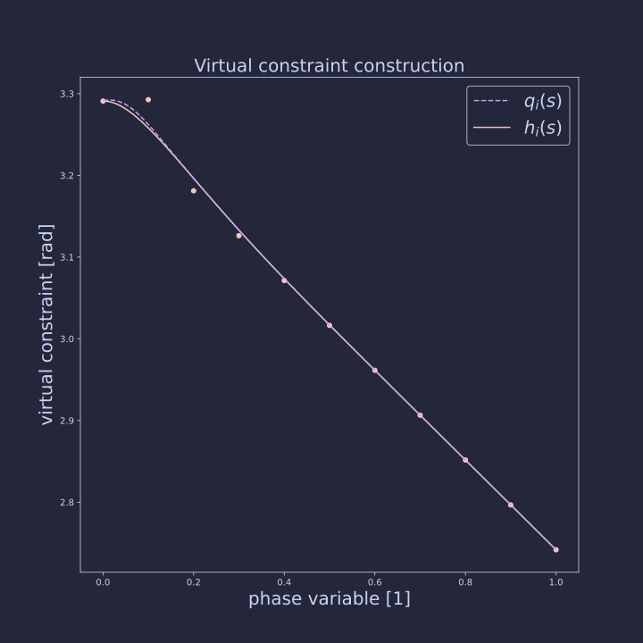
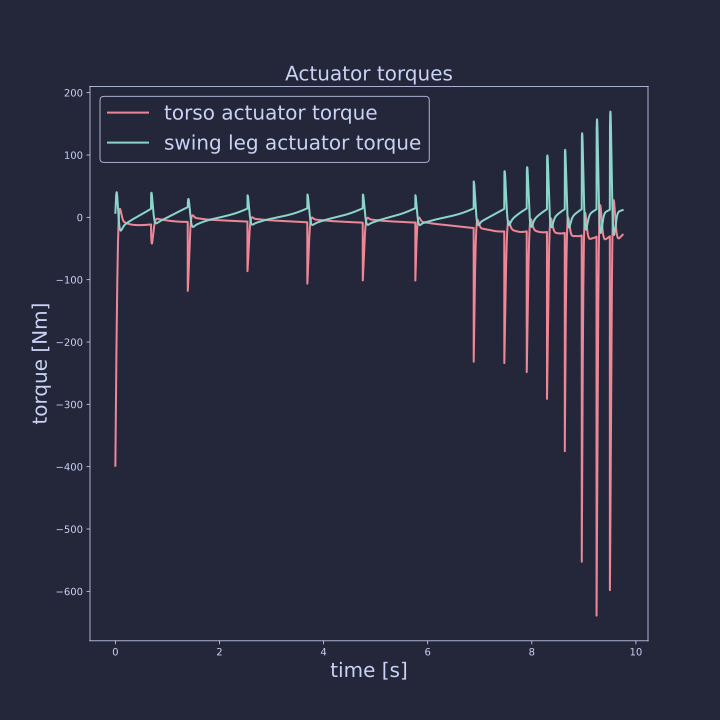
Analyse :
- Un seul paramètre $p$ par contrainte (position à $s=1$). On optimise en ligne $$ \begin{matrix} \min & p \\ \text{s.t.} & z^+ \in \mathcal{V} \end{matrix} $$
- Les trajectoires obtenues sont viables du point de vue de la zéro dynamique, mais rien ne contraint l' efficacité énergétique

Un robot conservatif non-linéaire
- Un modèle efficace pour décrire la locomotion à jambe.
- Hypothèse : jambe sans masse
- Dynamique hybride: $$ \left\{ \begin{matrix} \dot{x} = f_i(x) & x \in T\mathcal{Q} \\ x^+ = \Delta_i (x^-) & x^- \in \mathcal{S}_i \end{matrix} \right. $$
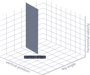
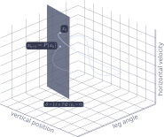

Section de Poincaré :
- surface $\mathcal{S}$ de dimension $n-1$ non-transverse au flot $x(t)$
- Application de premier retour $$P:\mathcal{S}\rightarrow \mathcal{S}$$
- Une trajectoire périodique est un point fixe de $P$


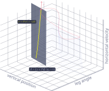
Continuation d'une famille de mouvements :
Au voisinage d'une trajectoire périodique d'un robot conservatif, il existe d'autres trajectoires périodiques (Raff & al. 2022) dans les directions $v$ : $$ \left( \frac{\partial P}{\partial x} - I\right)v = 0 $$ Initialisation de la trajectoire suivant par $x_k + \alpha v$: $$ E(x_{k} + \alpha v) = E(x_k) + \delta E $$
La trajectoire $x_{k+1}$ est obtenue comme un zéro de
$$
\Theta (x) = \begin{bmatrix} P(x) - x \\ E(x) - E_{k+1} \end{bmatrix}
$$
Par une méthode type Newton-Raphson (Algorithme implémenté dans CasADi). On obtient une variété de mouvements naturels de dimension 2.
L'intersection du NMM $\mathcal{M}$ avec la section de Poincaré $\mathcal{S}$ forme le générateur $\gamma$.
- $\gamma$ est une courbe (variété de dimension 1) paramétrée par $E$.
- $\mathcal{M}$ est entièrement identifiée par $\gamma$

Bilan :
- Les mouvements périodiques conservatifs sont connectés.
- On se ramène à l'exploration d'un espace de dimension 1 sans perte de richesse dynamique.
- Une variété de mouvements naturels est un objet géométrique qui identifie une famille de comportements périodiques.
Et les mouvements complexes ?
- On cherche à réaliser un demi-tour en dépensant le moins d'énergie possible
- Il faut "coller" des variétés de mouvements naturels au maximum
- Par la même technique, on trouve une variété de transition.

Actionneurs
- Les actionneurs sont placés en parallèle des ressorts
- $u_f$ est actif en vol uniquement
- $u_s$ est actif au sol uniquement
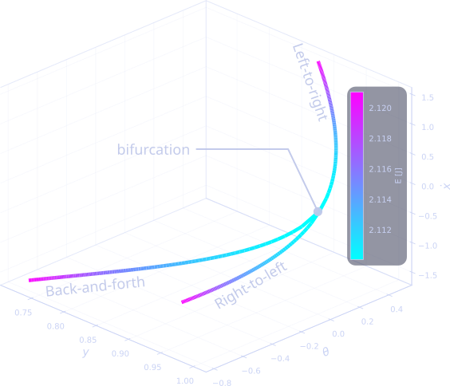
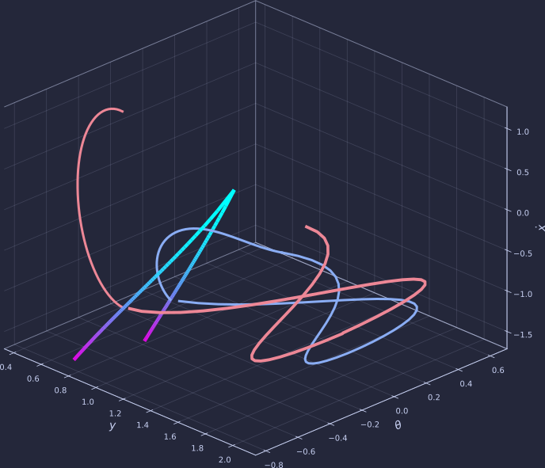
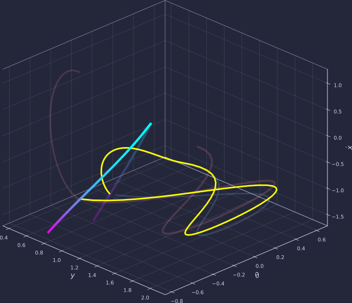
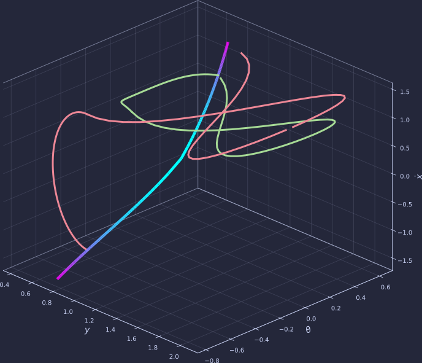
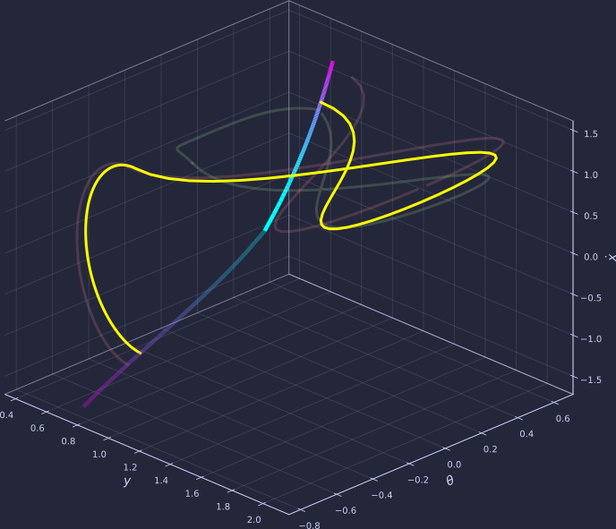
Commande prédictive
Soit $\cal{M}$ la variété associée au mouvement désiré. $\Gamma$ est une interpolation du générateur de $\cal{M}$ par splines cubiques. La commande $u$ est choisie par commande prédictive hybride d'horizon 1 pas.

Résultat :
- Excitation de la forme $$ A \cos(\omega t + \phi) $$
- Faible amplitude.
- Généralisation de la notion de "mode" dans le cas non-linéaire.
Résultat :
- Le mouvement est non-périodique.
- La dépense d'énergie est minimisée par proximité avec des "modes" conservatifs
- La démarche proposée est générale et ne nécessite pas de simplification de la dynamique pour des robots plus complexes.